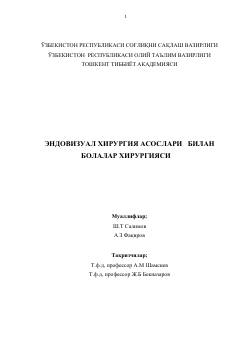

EXBolalar xirurgiyasida zamonaviy endovizual va laparoskopik usullarning qo'llanilishiga bag'ishlangan o'quv qo'llanma.
Ushbu darslik bolalar xirurgiyasida laparoskopik va endovizual usullarning asoslari, tarixi hamda amaliy qo'llanilishiga bag'ishlangan. Kitobda bolalar abrodminal, torakal xirurgiyasi, urologiyasi va ginekologiyasida qo'llaniladigan zamonaviy kam invaziv muolajalar batafsil yoritilgan. Nashr tibbiyot oliy o'quv yurtlari talabalari, magistrlar va amaliyotchi shifokorlar uchun mo'ljallangan.